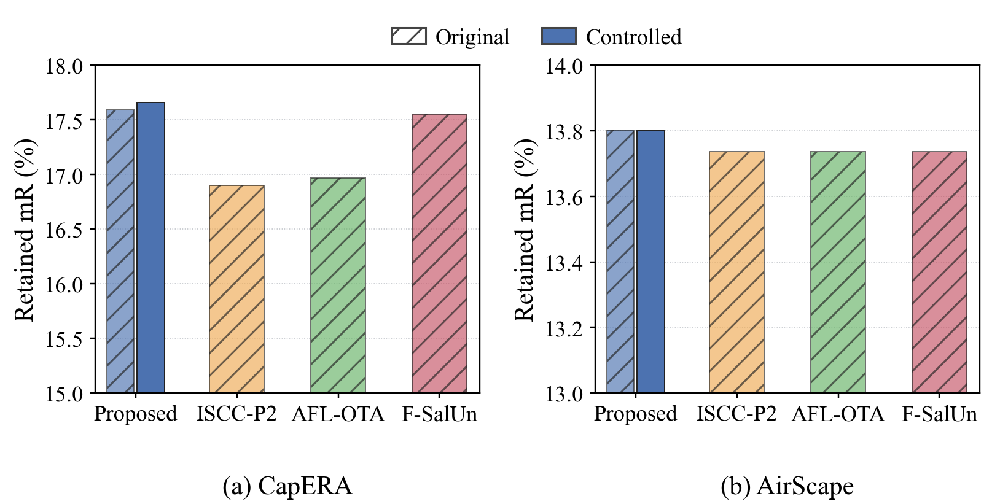
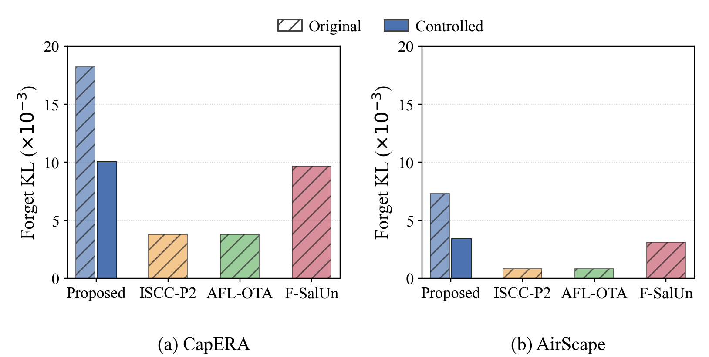
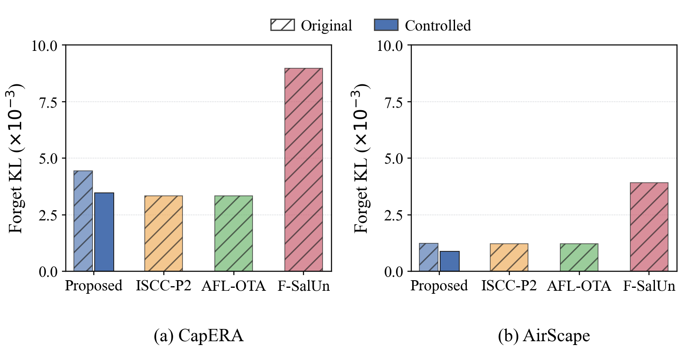
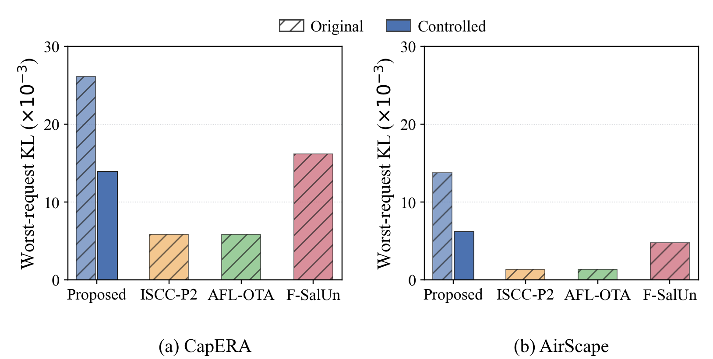
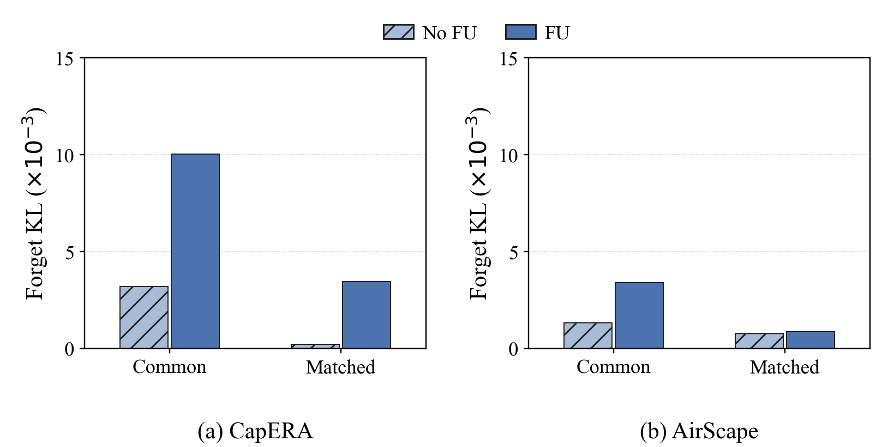
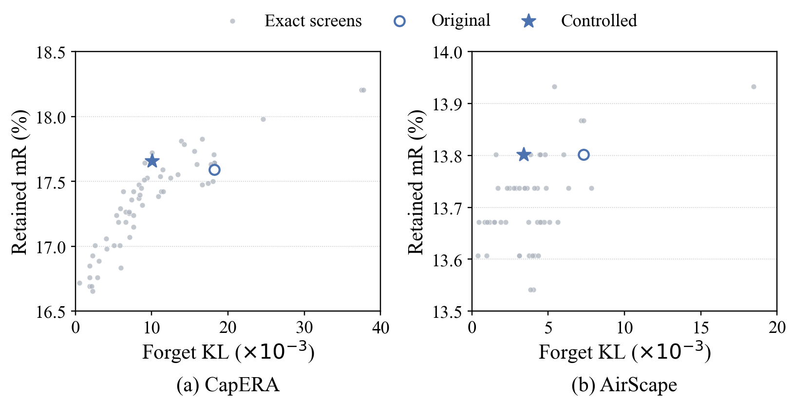

Retained retrieval performance of the original and controlled learning schedules.
The shared FL schedule preserves mR leadership against the three unchanged comparators and reduces KL. It does not lead common KL. Seed0 exploratory results; FU-on/off does not establish a forgetting benefit.
Methods, complete results and limits · All six figures

Retained retrieval performance of the original and controlled learning schedules.

Forget-set divergence from a common retained-only retraining reference.

Forget-set divergence from policy-matched retained-only retraining references.

Worst-request divergence from the common retraining reference.

Effect of FU on forget-set divergence under exact aggregation.

Retained retrieval performance and forget-set divergence across exploratory training controls.